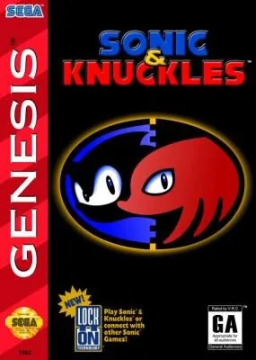

Mega Drive
Sonic & Knuckles
- Año: 1994
- Desarrollador: Sega
- Género: Plataformas / Acción / Shoot 'em up
¡Sonic y Knuckles unen fuerzas para frustrar la invasión del Death Egg del malvado Dr. Robotnik! Sonic tiene la velocidad, Knuckles tiene la fuerza... pero ¿tienes tú la habilidad? 8 enormes zonas nuevas, 3 fases especiales espectaculares y mucho más.
Controles
Mando de Mega Drive: A B C abajo y, en los juegos de 6 botones, X Y Z arriba. Es el reparto general de la Mega Drive en esta máquina.
| Panel | Juego |
|---|---|
 | A |
 | B |
 | C |
 | X (solo juegos de 6 botones) |
 | Y (solo juegos de 6 botones) |
 | Z (solo juegos de 6 botones) |
 | Start |
 + +  | Salir del juego |
El panel en Mega Drive


Argumento
Recopilado de internet (2026-11-03). Lo marcado con ⚠️ no está probado en la bartop.
Continuación directa de Sonic the Hedgehog 3, en la Isla Ángel. Sonic intenta impedir que el Dr. Robotnik vuelva a lanzar su arma orbital, el Death Egg. Knuckles, el guardián de la isla, tiene su propia historia: se enfrenta a un secuaz de Robotnik, EggRobo. Durante casi todo el juego, Sonic y Knuckles son rivales.
Final: con Sonic, la aventura acaba en el espacio, en The Doomsday, la persecución final contra Robotnik.
Fuentes
Wikipedia · descripción de la ficha (gamelist) · LongplayArchive
Jugabilidad
Recopilado de internet (2026-11-03). Lo marcado con ⚠️ no está probado en la bartop.
- Tipo de juego: plataformas de Sega Technical Institute (1994). Para un jugador; sin dos jugadores ni guardado.
- Sonic o Knuckles: se elige en la pantalla de título. Sonic salta más y usa los poderes de los escudos; Knuckles planea y trepa por casi todas las paredes. Las escenas cambian según el personaje.
- Zonas de dos actos: el primero acaba con un minijefe y el segundo con Robotnik (o EggRobo, con Knuckles).
- Anillos: protegen de los golpes; sin anillos, un golpe quita una vida.
- Lock-on: el cartucho original se podía conectar a Sonic 3 para jugar Sonic 3 & Knuckles, o a Sonic 2 para jugar con Knuckles. En la bartop hay Sonic 3 aparte. ⚠️ Genesis Plus GX puede emular el lock-on, pero no está configurado.
Botones según las guías (⚠️ por confirmar)
| Mando de Mega Drive | Panel | Acción |
|---|---|---|
| A (o B o C) | B (o A o R) | Saltar |
| Abajo + saltar | Abajo + B | Spin Dash (cargar y salir rodando) |
| Saltar en el aire (Sonic) | B en el aire | Escudo instantáneo, o el poder del escudo que lleve (rebote, doble salto, bola de fuego) |
| Saltar y mantener (Knuckles) | Mantener B en el aire | Planear; al chocar con una pared, trepar con arriba y abajo |
Fuentes
Guía de niveles
Recopilado de internet (2026-11-03). Lo marcado con ⚠️ no está probado en la bartop.
| Zona | Actos |
|---|---|
| Mushroom Hill | 1 · 2 |
| Flying Battery | 1 · 2 |
| Sandopolis | 1 · 2 |
| Lava Reef | 1 · 2 |
| Hidden Palace | 1 |
| Sky Sanctuary | 1 |
| Death Egg (solo Sonic) | 1 · 2 |
| The Doomsday (solo Sonic, con las siete Esmeraldas) | 1 |
- Con Knuckles, la aventura acaba en Sky Sanctuary.
- Fases de bonificación: al pasar un punto de control con 20 anillos o más. Una de esferas que orbitan (50 anillos dan una continuación) y otra con una tragaperras.
- Fases especiales: por anillos gigantes escondidos. Hay que poner rojas todas las esferas azules sin tocar las rojas; cada una da una Esmeralda del Caos. Con las siete, Super Sonic o Super Knuckles.
Fuentes
Objetos
Recopilado de internet (2026-11-03). Lo marcado con ⚠️ no está probado en la bartop.
| Monitor | Qué hace |
|---|---|
| Super Ring | 10 anillos |
| Invencible | Invencibilidad un rato |
| Escudo de fuego | Protege del fuego; Sonic hace un acelerón en bola de fuego. Se apaga en el agua |
| Escudo de burbuja | Respirar bajo el agua; Sonic rebota |
| Escudo eléctrico | Atrae los anillos; Sonic hace doble salto. Se apaga en el agua |
| Power Sneaker | Correr más rápido un rato |
| 1-Up | Vida extra |
| Robotnik | Hace daño: quita el escudo o los anillos |
Fuentes
Trucos y secretos
Recopilado de internet (2026-11-03). Lo marcado con ⚠️ no está probado en la bartop.
Truco: selección de zona (⚠️ sin probar)
En Mushroom Hill, agarrado a uno de los ascensores, pulsar en el joystick: izquierda, izquierda, izquierda, derecha, derecha, derecha, arriba, arriba, arriba. Suena un sonido. Volver a la pantalla de título y mantener A + Start de Mega Drive, que en el panel son B + 1P.
Secretos
- Blue Sphere: en el cartucho original, conectar otros juegos de Mega Drive abría el minijuego de esferas. ⚠️ No aplica en la bartop.
- Modo debug: existe un truco para activarlo; ⚠️ no lo detallo porque usa el lock-on y botones que pueden chocar con los atajos.
Fuentes
Longplay

Partida completa de la versión Mega Drive, con Sonic y luego con Knuckles (2 h 8 min), de LongplayArchive: Longplay of Sonic & Knuckles.
Pulsa el minuto de un nivel para ver el vídeo desde ese punto.
Con Sonic
| Zona | Momento |
|---|---|
| Mushroom Hill | |
| Flying Battery | |
| Sandopolis | |
| Lava Reef | |
| Hidden Palace | Inicio ▶ 49:15 |
| Sky Sanctuary | Inicio ▶ 51:21 |
| Death Egg | |
| The Doomsday |
Con Knuckles
La segunda vuelta del mismo vídeo, con Knuckles.